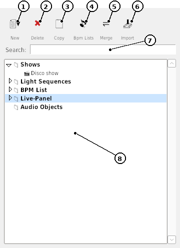
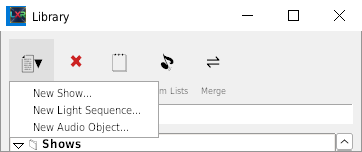
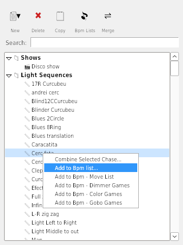
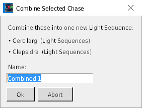
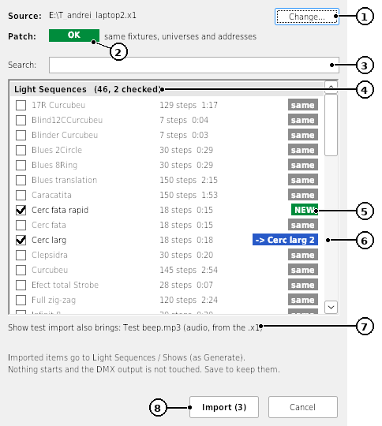
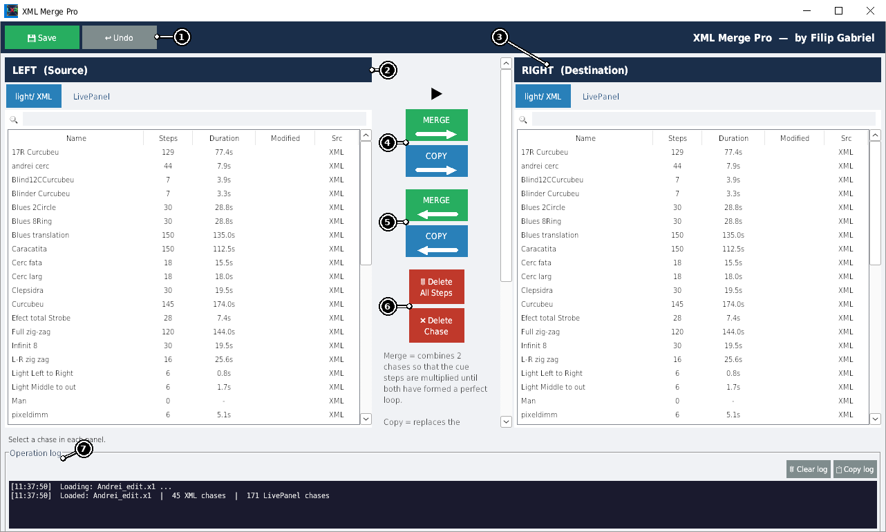

The Library
For: FullPlayer
The Library button opens a small window that stays on top of the program: everything the project holds - shows, light sequences, BPM lists, the chases of the Live panel and the audio objects. From here new buttons are made, sequences are copied and combined, and chases go into Sound2Light. Press Library again to close it.

A project with the folders closed, except Shows.
| 1 | New - a menu: New Show..., New Light Sequence..., New Audio Object... (see below). |
| 2 | Delete - deletes the item selected. It asks first; it cannot be undone. A light sequence is also taken out of every BPM list. |
| 3 | Copy - a copy of the light sequence selected, with all its steps, named with the next free number: "Cerc fata 01", "Cerc fata 02" ... |
| 4 | Bpm Lists - opens or closes the window with the BPM lists of Sound2Light (see BPM lists). |
| 5 | Merge - XML Merge Pro (see below). |
| 6 | Import - light sequences and shows from another .x1 project (see Import from project below). |
| 7 | Search - type a part of a name: the tree shows only what matches, at every key. |
| 8 | The tree, in five folders (see the table below). |
| Folder | What it holds |
|---|---|
| Shows | The shows of the Show Editor. Double-click: the show opens in the Show Editor. |
| Light Sequences | The sequences of the project (files in its light folder). Double-click: Edit Cue Steps. Drag one onto the Live panel: a new button that plays it. |
| BPM List | The copies that the BPM lists of Sound2Light play, named "list - chase". With Hide list name in Bpm list entries ticked (the Option tab; on at first) they are in a folder for every list, shown without the list's name; the copies that are in no list now are in (no list). Rename, Delete, Copy and the drag work on the whole name as before. See the picture below the table. |
| Live-Panel | The chases of the buttons on the Live panel. Double-click: Edit Cue Steps of that button. |
| Audio Objects | Music and other files for the Show Editor. They can be dragged only onto the timeline of the Show Editor. |

The BPM List folder with Hide list name in Bpm list entries ticked (left, on at first) and unticked (right).
Selecting, renaming, dragging
| click | Selects an item. Ctrl+click adds one, Shift+click takes everything between. |
| click again | On the only item selected, after a moment: its name can be changed in place. Enter keeps it, Esc leaves it. A name that another object has, or one with ' * / : < > ? \ | " &, is refused and the old name stays. |
| double-click | Opens it (see the table above). |
| drag | A light sequence onto the Live panel - a new button; onto the Show Editor - a block on the timeline; onto Sound2Light - into a BPM list. |
New

| Item | What it makes |
|---|---|
| New Show... | An empty show, with the name you type. |
| New Light Sequence... | A light sequence with one step, all channels at 0. Double-click it to fill it in Edit Cue Steps. |
| New Audio Object... | Brings a file into the project: music (.mp3, .wav), a light sequence (.seq), a show or a macro file. It needs a project that is open. |
An empty name or one that is already used is refused: Pick a name that isn't blank or already used.
The right-click menu

| Item | What it does |
|---|---|
| Combine Selected Chase... | Makes one new light sequence from the chases selected (see below). |
| Add to Bpm list... | Puts the chases selected into a BPM list of Sound2Light; you type the name of the list. |
| Add to Bpm - Move List, Dimmer Games, Color Games, Gobo Games | The same, straight into one of the four usual lists. See BPM lists. |
Combine Selected Chase

Select two or more chases (Ctrl+click), right-click, Combine Selected Chase..., type a name (it proposes "Combined 1") and press Ok. The new light sequence plays them all at once:
- It has as many steps as it takes for all of them to come round together: 6 steps and 4 steps give 12, 18 and 18 give 18.
- In each step a channel takes the value of the chases where it is not 0; when several have it, the one lower in the list wins.
- The fade of a step is the shortest of their fades; the wait the shortest wait that is not 0.
Combine a movement with a colour chase and a dimmer chase of other channels: one button plays all three, always in step.
Import from project
Make new effects without touching the show that runs: work on a copy of the same project - on a second laptop, or in LumiDMX X1 on this one - save it, and bring what you made here. Import asks for the .x1 file, then shows what it has:

| 1 | The project the items come from. Change... takes another one. Only .x1 projects. |
| 2 | Patch: OK - the same fixtures, universes and addresses as here. Patch: DIFFERS (red) tells the first difference: the steps would land on other channels. You can still import. |
| 3 | Search: the list shows only the names that have what you type. The ticks stay when you search again. |
| 4 | One list, with Light Sequences and Shows: how many there are, how many are shown, how many ticked. Scroll with the bar or the mouse wheel; click a row to tick it or untick it. |
| 5 | NEW: not in this project - ticked. |
| 6 | -> name 2: this project has the name with other steps - ticked, it comes in as "name 2" (as Generate names). same (grey): already here, identical - not ticked. |
| 7 | What the show clicked last brings with it: its songs, taken from the .x1 when this project has not got them. Audio file not found when that .x1 had not got one either. |
| 8 | Import (N): N = everything ticked, also what the search hides now. Cancel (or Esc) imports nothing. |
- Import only adds: the light sequences go to Light Sequences (at the end of the folder, as Generate puts them), the shows to Shows. Nothing starts and the DMX output is not touched, so it can be done during the show.
- A show keeps its own sequences inside itself, so it needs nothing else from the Library.
- The project shows as changed: Save it to keep what you imported.
- LumiDMX X1 on the same laptop: give it no DMX interface and no MIDI (the Akai), and keep its Sound2Light off, so it does not take them from LumiDMX Remake. Work on a copy of the .x1, not on the file LumiDMX Remake has open.
XML Merge Pro

| 1 | Save saves the project (with a backup of the old file); Undo takes back the last change of a chase (Ctrl+S, Ctrl+Z). |
| 2 | LEFT (Source): the chases of the project - light/ XML (the light sequences) or LivePanel (the chases of the buttons). Search, then pick one. A heading sorts by that column. |
| 3 | RIGHT (Destination): the same lists, for the chase that receives. |
| 4 | MERGE and COPY from left to right. |
| 5 | MERGE and COPY from right to left. |
| 6 | Delete All Steps empties the chases selected (they stay, with no steps); Delete Chase removes them completely. It cannot be undone. |
| 7 | The Operation log: what was done, with the time. Copy log, Clear log. |
Merge combines two chases: the steps are multiplied until both have formed a perfect loop (as Combine above). Copy replaces the destination with an exact copy of the source. A changed chase gets a * and goes to the top of its list. The changes go into the open project at once - the Library, the Live panel and Edit Cue Steps see them; Save writes the project to disk. Right-click a chase: Edit Cue Steps, Rename, its steps and duration.